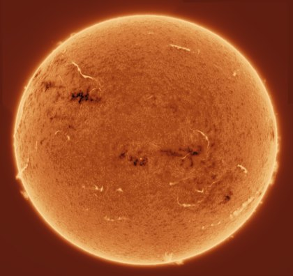
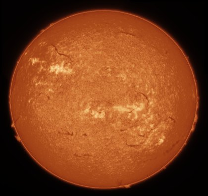
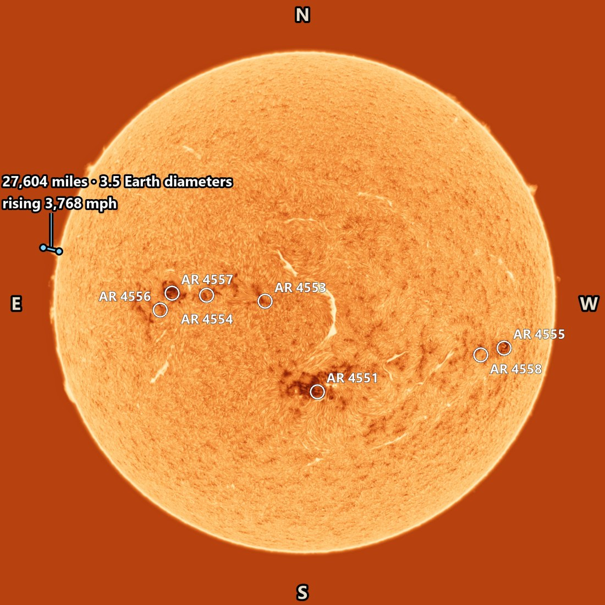

Your first timelapse
From a folder of captures to a finished MP4, with the time, the region labels, the Earth to scale and a measured prominence on it if you like.
1. Install
- Unzip the whole download into a folder of its own, for example Documents. Don't run it from inside the zip.
- Double-click S.U.N. Studio.exe. If Windows says it protected your PC, click More info, then Run anyway.
2. Import or stack
Already have stacked 16-bit TIFFs? Click Import TIFF Folder and choose the folder of one
session. Times in the file names (HH_MM_SS) place each frame on the timeline. Your files are never changed.
Starting from SER videos? Click Stack SER Folder… and choose the folder of captures.
- The share of frames is a range, 15–80 % by default. For every capture the stacker tries the shares in that range, stacking each twice from alternate frames, and keeps the one whose finest real detail stands highest above the noise: fewer frames when the seeing was unsteady, more when it was calm. Set both ends the same for a fixed share.
- Each patch of the disk takes its own sharpest frames, so a moment of good seeing in one part of the disk is used there.
- Darks, flats and bias, drizzle and the search for transits are in the same window.
- A row per capture shows its progress, and the stacks can open in the program as soon as it finishes.
3. Analyze & Recommend
Press Analyze & Recommend. In about 20 seconds it scores every frame, marks the soft and cloudy ones, picks a reference frame and suggests settings. Tick what you want and apply.
Then look through the frames: ← → step through them, D rejects the one shown (or brings it back) and R makes it the reference.
4. Choose a look
- Open Presets… and choose The Chaser — Copper (or — Fire).
- Under Stretch › Editable tone curve, pick Positive or Inverted and press Auto stretch. It measures the sky, the prominences and the disk on the reference frame and writes the curve: Positive gives a black sky and bright prominences, Inverted the dark-on-light look with the prominences still bright.


PositiveInverted5. Fine-tune
- Prominence › Prominences and limb: stretch, brightness and the rim at the limb
- Sharpen › Wavelets: more or less structure
- Color Grade › Primaries: Contrast, Shadows, Highlights
- Stretch › Levels: black point, midtones, white point
The box beside each section's title turns that step off and on, and its settings stay. Right-click a title to reset just that section, or use Reset all to start over. A / B on the preview's toolbar splits the picture, with the left half as it was before your last change.
6. Turn and crop
- North up. Press North up… on the preview's toolbar, choose the reference image (GONG H-alpha or SDO), check the capture time in UTC and press Find. It matches your reference frame against a public full-disk image taken at the same time; Apply turns the view so solar north is up and east is on the left. The region labels, the grid and the directions need it.
- By hand. Rotate, Flip H and Flip V above the timeline turn the picture yourself.
- The crop. Drag on the preview to draw it. Drag inside it to move it, or pull its corners and edges to resize it; a grid and its size in pixels show while you adjust it. Right-click removes it.
7. Add overlays
Everything drawn over the timelapse is in the Overlay group, and shows on the preview as you set it.

The time and a title
In Text overlay, tick Burn in text: capture time, date, title. Type a
Title, the Date if your file names hold only the time, and a
Time zone label such as UTC or EDT. Each frame shows its own capture time. The lines are built
from fields: {title} {date} {time} {zone} {elapsed}
{frame}. Position puts the text in a corner, or
Place text by clicking on the preview puts it where you click.
Sunspot labels and directions
After North up…, tick Label the sunspot regions (NOAA numbers) in Sunspot labels and directions. Each active region gets its number from that day's region summary, downloaded once and kept, and every label is placed clear of the others. Directions on the Sun: N, E, S, W puts the four letters at the picture's edges. Their size, colour and outline are set below.
Where a close-up is
In Locator, tick Locator: where the frame is on the Sun (close-ups): a small disk in a corner, north up, with your frame outlined on it.
A heliographic grid
Heliographic grid draws latitude and longitude lines, either fixed on the disk (Stonyhurst) or turning with the Sun (Carrington), at the spacing you choose, and can show P, B0 and L0 in a corner.
The Earth to scale
- In Telescope and camera, fill in the focal length, the camera's pixel size and any Barlow, drizzle or binning. That sets the image scale.
- In NASA Earth — true solar scale, press Download NASA Earth photograph, then tick Show Earth in preview and Include Earth in exports.
- Drag the Earth where you want it on the preview. It is drawn at its true size beside the Sun.
Measure a prominence
- Press Measure (M) on the preview's toolbar. A click gives a point's height above the limb, a drag the distance between two points.
- In Measurements, press Add the one on the preview, then Track it: it follows the prominence from frame to frame. If a point drifts off, drag it back on a later frame and the track is redone from there. Start here and End here set the frames it shows on.
- Choose km and km/h, miles and mph, or both, tick Also in Earth diameters if you like, and Show the measurements in the timelapse. The speed is fitted over the minutes you set, so it doesn't jump from frame to frame.
Hide the disk
Occult the disk (only the limb and prominences show) in Occulting disk covers the disk with a soft edge, for a timelapse of the prominences alone.
8. Make it smooth
The timelapse settings are in the Export group.
- Timelapse — in-betweens: Frames per capture adds frames between the captures for smooth playback; Keep the video length raises the frame rate instead (60 fps at most).
- De-shimmer (timelapse): De-shimmer the timelapse takes out the seeing's wobble from frame to frame. Prominences beyond the limb keep their own motion.
- Temporal smoothing (deflicker): Smooth the timelapse over time evens out the brightness from frame to frame and keeps the detail.
- Registration target — limb / surface lock: Limb Lock holds the disk's edge still, so the surface turns slowly through the video; Surface Lock holds the features still.
9. Review and export
- Render & Review renders every frame with your settings so you can play it through first. Difference vs reference shows how well the frames line up.
- In the Review window, Overlays gives With overlays, Without overlays or Both: with and without: two videos from one render.
- Export… makes the MP4, GIF and / or 16-bit TIFF frames, named by the date and the time they
span, such as
SUN_2026-10-15_1301-1627_3h26m.mp4. For a single frame, use Save Still….